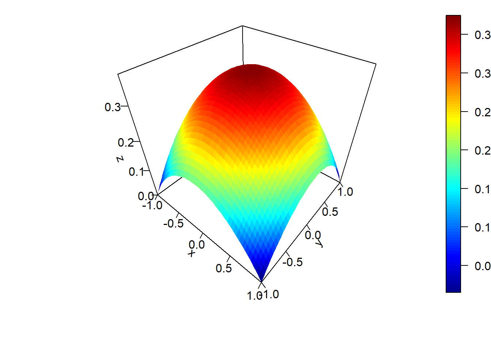
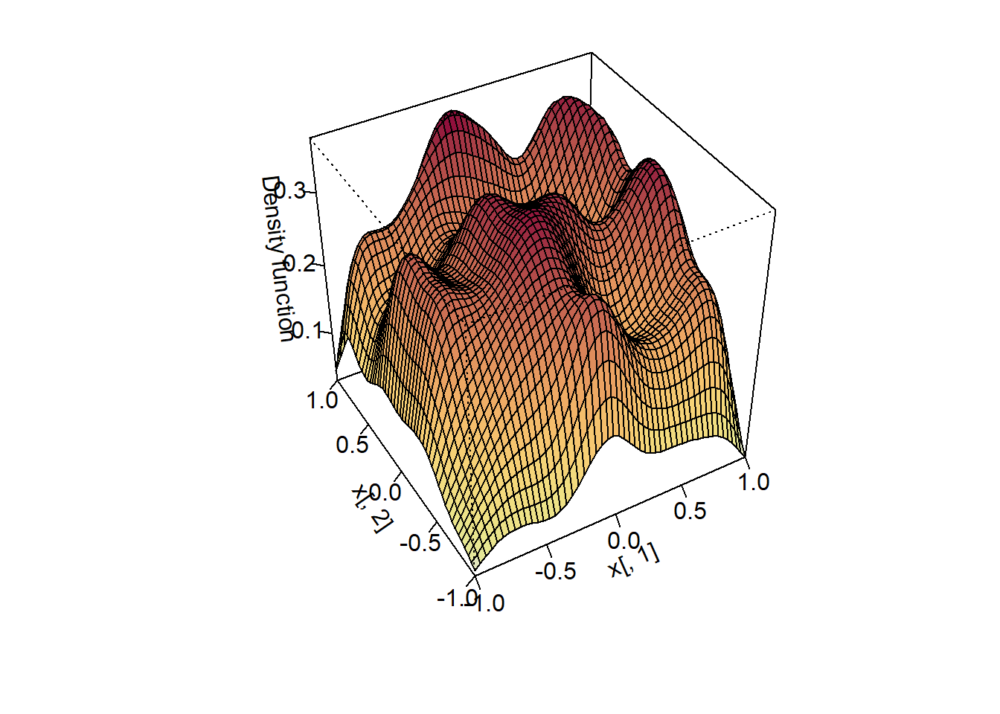
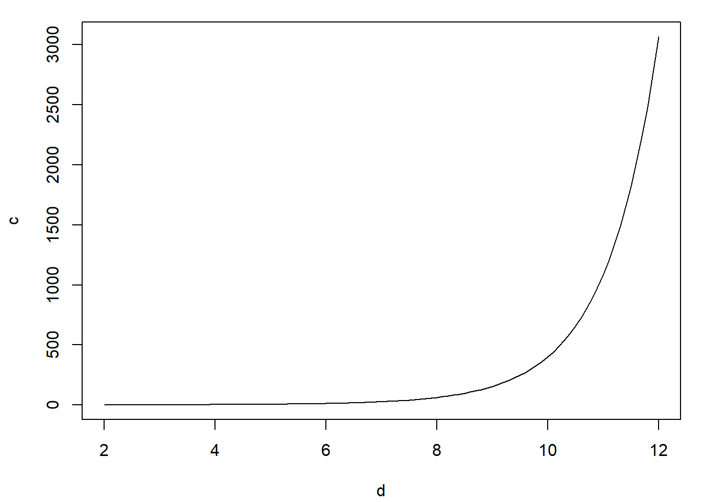

6.2 El método de aceptación-rechazo
El algoritmo de aceptación-rechazo es el mismo que el del caso univariante descrito en la Sección 4.2, la única diferencia es que las densidades son multidimensionales. Supongamos que la densidad objetivo \(f\) y la densidad auxiliar \(g\) verifican: \[f\left( x_1,x_2,\ldots,x_d\right) \leq c\cdot g\left( x_1,x_2,\ldots,x_d\right) \text{, }\forall \mathbf{x} = \left( x_1,x_2,\ldots,x_d\right)\in \mathbb{R}^d\text{.}\] para una constante \(c>0\). El algoritmo sería:
Generar \(U\sim \mathcal{U}\left( 0,1\right)\).
Generar \(\mathbf{T} = ( T_1, T_2, \ldots, T_d) \sim g\).
Si \(c \cdot U \cdot g( T_1, T_2, \ldots, T_d) \leq f( T_1, T_2, \ldots, T_d)\) devolver \(\mathbf{X}= \mathbf{T}\).
En caso contrario volver al paso 1.
Por ejemplo, de forma análoga al caso unidimensional, en el caso de una densidad acotada en un hipercubo (intervalo cerrado multidimensional) siempre podríamos considerar una uniforme como densidad auxiliar.
Ejemplo 6.2 (distribución bidimensional acotada)
Supongamos que estamos interesados en generar valores de una variable aleatoria bidimensional \(\left( X,Y\right)\) con función de densidad: \[f(x,y)= \left\{ \begin{array}{cl} \frac{3}{16}\left( 2-\left( x^2+y^2\right) \right) & \text{si }x\in [-1, 1]\text{ e }y \in [-1, 1] \\ 0 & \text{en otro caso} \end{array} \right.\]
Podríamos considerar como densidad auxiliar la uniforme en \([-1, 1] \times [-1, 1]\):
\[g\left( x, y \right) = \left\{ \begin{array}{ll} \frac{1}{4} & \text{si }x \in [-1, 1] \text{ e }y\in [-1, 1] \\ 0 & \text{en otro caso} \end{array}\right.\]
Como \(f(x, y) \leq M = f(0,0) = \frac38\), tomando \(c= \frac{M}{g(x,y)} = \frac32\) tendríamos que \(f(x,y) \leq cg(x,y) = M\) y el algoritmo sería:
Generar \(U \sim \mathcal{U}\left( 0, 1\right)\).
Generar \(T_1, T_2 \sim \mathcal{U}\left( -1, 1 \right)\).
Si \(M \cdot U\leq f(T_1, T_2)\) devolver \(\mathbf{X} = (T_1, T_2)\).
En caso contrario volver al paso 1.
En este caso, la condición de aceptación del paso 3 simplificada sería: \(U \leq 1 - \left( T_1^2 + T_2^2 \right) / 2\).
Si queremos implementar este algoritmo en R, podemos comenzar por definir y representar la densidad objetivo con el siguiente código:
f <- function(x, y) 3 * (2 - x^2 - y^2) / 16
persp.f2D <- function(f2d, ax=-1, bx=1, ay=-1, by=1, nx=21, ny=21, ...) {
x <- seq(ax, bx, length = nx)
y <- seq(ay, by, length = ny)
z <- outer(x, y, f2d)
plot3D::persp3D(x, y, z, ...)
}
persp.f2D(f, -1, 1, -1, 1, 50, 50, ticktype = "detailed")
Las siguientes funciones implementan el método de aceptación-rechazo para simular
valores de la densidad objetivo (de forma similar al los ejemplos mostrados
para el caso unidimensional, incluyendo también una variable global ngen
para contar el número de generaciones de la distribución auxiliar):
ngen <- 0
rf <- function() {
# Simulación por aceptación-rechazo a partir de uniforme
m <- 3/8
while (TRUE) {
u <- runif(1)
x <- runif(2, -1, 1)
ngen <<- ngen + 1
if (m*u <= f(x[1], x[2])) return(x)
}
}
rfn <- function(n = 1000) {
ngen <<- 0
# Simulación n valores
x <- matrix(nrow = n, ncol = 2)
for(i in 1:n) x[i , ] <- rf()
return(x)
}Empleando esta última función podemos generar 1000 observaciones de la distribución objetivo, obteniendo de paso el tiempo de CPU:
set.seed(1)
nsim <- 1000
# ngen <- 0
system.time(x <- rfn(nsim))## user system elapsed
## 0.02 0.00 0.01# plot(x)Podemos obtener el número medio de generaciones de la distribución auxiliar (la aproximación por simulación) y utilizarlo para evaluar la eficiencia (la comparación con el valor teórico serviría para evaluar si el algoritmo está bien implementado):
{cat("Número de generaciones = ", ngen)
cat("\nNúmero medio de generaciones = ", ngen/nsim)
cat("\nProporción de rechazos = ", 1-nsim/ngen, "\n")}## Número de generaciones = 1522
## Número medio de generaciones = 1.522
## Proporción de rechazos = 0.34297# Valores teóricos:
c <- 3/2
c## [1] 1.51 - 1/c## [1] 0.33333Si queremos representar gráficamente la distribución de los valores generados
para compararla con la densidad objetivo, como esta presenta discontinuidades
en los extremos del intervalo \([-1, 1] \times [-1, 1]\), puede resultar de interés
las funciones ks::histde o ks::kde.boundary() (para obtener una estimación
no paramétrica de la densidad con soporte acotado):
library(ks)
# hist2d <- histde(x, xmin = c(-1, -1), xmax = c(1, 1))
# plot(hist2d)
# Cuidado: puede requerir de bastante tiempo de computación
fhat <- kde.boundary(x, xmin = c(-1, -1), xmax = c(1, 1), boundary.kernel = "linear")
plot(fhat, display = "persp")
Ejercicio 6.1 (distribución bidimensional acotada)
Supongamos que estamos interesados en una variable aleatoria bidimensional \(\left( X,Y\right)\) con función de densidad: \[f(x,y)=\left\{ \begin{array}{cl} \frac{1}{12}(4-xy) & \text{si } 0 \le x \le 2 , 0 \le y \le 2\\ 0 & \text{en otro caso} \end{array} \right.\]
Describir un algoritmo basado en el método de aceptación-rechazo, considerando como densidad auxiliar una uniforme, que permita generar observaciones de esta distribución. ¿Cuál sería el valor esperado de generaciones de la densidad auxiliar?
Escribir una función que implemente este algoritmo, emplearla para generar 1000 observaciones y representar gráficamente su distribución.
Ejemplo 6.3 (distribución uniforme en la esfera)
Supongamos que el objetivo es simular puntos uniformemente distribuidos sobre la “esfera” (bola) unitaria \(d\)-dimensional (ver Figura D.1): \[C_d= \left\{ \left( x_1, x_2, \ldots, x_d \right) \in \mathbb{R}^d : x_1^2 + x_2^2 + \cdots + x_d^2 \leq1 \right\}.\]
Denotando por \(V_d (1)\), el “volumen” (la medida) de la esfera \(d\)-dimensional de radio \(1\) (en general, la de radio \(r\) verifica \(V_d\left( r\right) = r^d V_d (1)\)), se tiene: \[f\left( x_1,x_2,\ldots,x_d\right) = \left\{ \begin{array}{ll} \frac{1}{V_d (1) } & \text{si } \left( x_1, x_2, \ldots ,x_d\right) \in C_d\\ 0 & \text{si } \left( x_1,x_2,\ldots,x_d\right) \notin C_d \end{array} \right.\]
Para simular valores en \(\mathbb{R}^d\), con densidad \(f\), podemos utilizar como distribución auxiliar una \(\mathcal{U}\left( [-1, 1] \times [-1, 1] \times \overset{\text{d}}{\cdots} \times [-1, 1] \right) = \mathcal{U}\left( [-1, 1]^d\right)\), dada por: \[g\left( x_1,x_2,\ldots,x_d\right) = \left\{ \begin{array}{ll} \frac{1}{2^d} & \text{si } x_i \in [-1, 1], \text{ para todo } i=1,2,\ldots,d\\ 0 & \text{en otro caso} \end{array}\right.\]
La simulación de \(T \sim \mathcal{U}\left( [-1, 1]^d \right)\) puede hacerse trivialmente mediante \(T_i \sim \mathcal{U}\left( -1, 1 \right)\) para cada \(i=1,2,\ldots,d\), ya que las componentes son independientes.
Por otra parte, la constante \(c\) óptima para la utilización del método de aceptación-rechazo es: \[c= \max_{\{\mathbf{x}:g(\mathbf{x}) > 0\}} \frac{f(\mathbf{x})}{g(\mathbf{x})} = \frac{\frac{1}{V_d (1)}}{\frac{1}{2^d}} = \frac{2^d}{V_d (1)}\] y la condición de aceptación \(cUg(\mathbf{T}) \leq f(\mathbf{T})\) se convierte en: \[\frac{2^d}{V_d (1)}U\frac{1}{2^d}1_{[-1, 1]^d}(\mathbf{T}) \leq\frac{1}{V_d (1)}1_{C_d}(\mathbf{T}),\] o, lo que es lo mismo, \(U 1_{[-1, 1]^d}(\mathbf{T}) \leq 1_{C_d}(\mathbf{T})\). Dado que \(U > 0\) (con probabilidad \(1\)) y que \(1_{[-1, 1]^d}(\mathbf{T}) = 1\), esta condición equivale a que \(1_{C_d}(\mathbf{T}) = 1\) (no puede ser \(0\)), es decir, a que \(\mathbf{T} \in C_d\), por tanto, a que se verifique: \[T_1^2 + T_2^2 + \cdots + T_d^2 \leq 1.\]
Como el valor de \(U\) es superfluo en este caso, el algoritmo queda:
Simular \(V_1, V_2, \ldots, V_d \sim \mathcal{U}(0,1)\) independientes.
Para \(i = 1, 2, \ldots, d\) hacer \(T_i = 2V_i - 1\).
Si \(T_1^2 + T_2^2 + \cdots + T_d^2 > 1\) entonces volver al paso 1.
Devolver \(\mathbf{X} = \left( T_1, T_2, \ldots, T_d \right)^t\).
Ver el Ejercicio 1.1 para el caso de \(d=2\).
Usando la fórmula del volumen de una “esfera” \(d\)-dimensional: \[V_d (r) = \frac{\pi^\frac{d}{2}}{\Gamma\left(\frac{d}{2} + 1\right)}r^d= \left\{ \begin{array}{ll} \dfrac{\pi^{d/2}r^d}{\left( d/2\right) !} & \text{si } d \text{ es par}\\ \dfrac{2^{\left\lfloor \frac{d}{2}\right\rfloor +1}\pi^{\left\lfloor \frac{d}{2}\right\rfloor }r^d}{1\cdot3\cdot5\cdots d} & \text{si } d \text{ es impar} \end{array}\right.\] puede verse que el número medio de iteraciones del algoritmo, dado por la constante \(c = \frac{2^d}{V_d (1)}\), puede llegar a ser enormemente grande. Así, si \(d=2\) se tiene \(c=1.27\), si \(d=3\) se tiene \(c=1.91\), si \(d=4\) entonces \(c=3.24\) y para \(d=10\) resulta \(c=401.5\) que es un valor que hace que el algoritmo sea tremendamente lento en dimensión \(10\).
vball <- function(d, r) pi^(d/2) * r^d / gamma(d/2 + 1)
c.opt <- function(d) 2^d / vball(d, 1)
c.opt(2:10)## [1] 1.2732 1.9099 3.2423 6.0793 12.3846 27.0913 63.0742
## [8] 155.2217 401.5428curve(c.opt, 2, 12, xlab = "d", ylab = "c")
Esto está relacionado con la maldición de la dimensionalidad (curse of dimensionality), a medida que aumenta el número de dimensiones el volumen de la “frontera” crece exponencialmente (ver p.e. Fernández-Casal et al., 2024, pp. sec. 1.4).